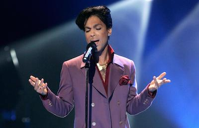

Prince
About
Prince was a musician born in Minneapolis, Minnesota. He was an incredibly talented artis. He played guitar, keyboard, bass, drums, and was a vocalist. Prince had 10 albums go platinum and sold over 400 million records worldwide.
Prince is widely regarded as one of the greatest musicians of his generation. Prince produced his albums himself and his music incorporated a wide variety of styles, including funk, R&B, rock, new wave, soul, synth-pop, pop, jazz, and hip hop. He often played most or all instruments on his recordings.
Limited Discography (My Favortie Albums)
- For You
- Prince
- Dirty Mind
- 1999
- Purlpe Rain
- LoveSexy
- Musicology
Awards
Grammys
Prince was nimonated for 33 Grammy awards. He won 7 and 2 of his albums earned the Grammy Hall of Fame Award.
MTV Music Video Awards
Prince earned 12 nominations and won 4 Vidoe Music Awards.
Photos
